Aprendizado de Máquina Supervisionado - Regressão
Sobre
Objetivo
Avaliar métodos e métricas referentes à problemas de regressão. A ideia não é se ater a detalhes de funcionamento de cada método, mas sim entender quais métricas podem ser consideradas nessa situação e ainda propor uma forma de explicar a influência de cada atributo nos resultados.
Base de dados
Será utilizada uma das bases de dados disponíveis na biblioteca Scikit-Learn.
Target: medida quantitativa da progressão da doença um ano após uma baseline.
Instâncias: 442
Atributos:
-
age: idade;
-
sex: sexo biológico;
-
bmi: índice de massa corporal (body mass index);
-
bp: pressão arterial média (average blood pressure);
-
s1: nível sérico de colesterol total (tc - total serum cholesterol);
-
s2: lipoproteína de baixa densidade (ldl - low-density lipoproteins);
-
s3: lipoproteína de alta densidade (hdl - high-density lipoproteins);
-
s4: colesterol HDL (tch - total cholesterol / HDL);
-
s5: concentração sérica de triglicerídeos (ltg - possibly log of serum triglycerides level);
-
s6: nível de açúcar no sangue (glu - blood sugar level).
Algoritmos
-
Regressão linear;
-
Árvore de decisão;
-
Random Forest;
-
Support Vector Regression (SVR).
Métricas
-
Variação explicada (explained_variance_score): mede a proporção em que um modelo matemático explica a variação de um determinado conjunto de dados. O melhor valor possível é 1, valores mais baixos são piores;
-
Erro quadrático médio - MSE (mean_squared_error): mede a média dos quadrados dos erros, ou seja, a diferença média quadrática entre os valores estimados e o valor real. É uma medida da qualidade de um estimador. É sempre um valor positivo que diminui à medida que o erro se aproxima de zero;
-
Coeficiente de determinação (r2_score): fornece uma indicação da qualidade do ajuste e, portanto, uma medida de quão bem as amostras não vistas provavelmente serão previstas pelo modelo, por meio da proporção da variância explicada. O melhor valor possível é 1 e pode ser negativo (o modelo pode ser arbitrariamente pior). Um modelo constante que sempre prevê o valor esperado de y, desconsiderando os recursos de entrada, obteria uma pontuação r2 de 0.
PARTE 1: Importar bibliotecas
import matplotlib.pyplot as plt # criação de gráficos e visualizações de dados em geral
import numpy as np # realizar cálculos em arrays multidimensionais
import pandas as pd # manipulação e análise de dados
import seaborn as sn # visualização de gráficos estatísticos
import shap # explicar saídas dos modelos de aprendizado de máquina
from sklearn.datasets import load_diabetes # carregar base de dados
from sklearn.model_selection import train_test_split # utilizado para dividir a base de dados em treino e teste
from sklearn.linear_model import LinearRegression # importar método de regressão linear
from sklearn.tree import DecisionTreeRegressor # importar método de árvore de decisão
from sklearn.ensemble import RandomForestRegressor # importar método random forest
from sklearn.svm import SVR # importar método SVR
from sklearn import metrics # importar métricas de avaliação
# a saída dos comandos de plotagem é exibida diretamente abaixo da célula
%matplotlib inline
PARTE 2: Carregar e visualizar base de dados
Algumas formas interessantes de visualizar os dados presentes na base:
.info(): informações resumidas sobre cada atributo (quantidade, tipo, etc);
.describe(): gerar estatísticas descritivas de cada atributo;
.corr(): calcula a correlação de colunas em pares (excluindo valores NA/nulos);
.pairplot(..): visualização do relacionamento de colunas em pares.
# extrair dados
diabetes = load_diabetes(as_frame=True)
X, y, frame = diabetes.data, diabetes.target, diabetes.frame
# checar nome dos atributos e shape
print(f"""Atributos:{diabetes.feature_names}\n
Shape dados:{diabetes.data.shape}\n
Shape target:{diabetes.target.shape}""")
Atributos:['age', 'sex', 'bmi', 'bp', 's1', 's2', 's3', 's4', 's5', 's6']
Shape dados:(442, 10)
Shape target:(442,)
<class 'pandas.core.frame.DataFrame'>
RangeIndex: 442 entries, 0 to 441
Data columns (total 11 columns):
# Column Non-Null Count Dtype
--- ------ -------------- -----
0 age 442 non-null float64
1 sex 442 non-null float64
2 bmi 442 non-null float64
3 bp 442 non-null float64
4 s1 442 non-null float64
5 s2 442 non-null float64
6 s3 442 non-null float64
7 s4 442 non-null float64
8 s5 442 non-null float64
9 s6 442 non-null float64
10 target 442 non-null float64
dtypes: float64(11)
memory usage: 38.1 KB
| age | sex | bmi | bp | s1 | s2 | s3 | s4 | s5 | s6 | target | |
|---|---|---|---|---|---|---|---|---|---|---|---|
| count | 4.420000e+02 | 4.420000e+02 | 4.420000e+02 | 4.420000e+02 | 4.420000e+02 | 4.420000e+02 | 4.420000e+02 | 4.420000e+02 | 4.420000e+02 | 4.420000e+02 | 442.000000 |
| mean | -3.639623e-16 | 1.309912e-16 | -8.013951e-16 | 1.289818e-16 | -9.042540e-17 | 1.301121e-16 | -4.563971e-16 | 3.863174e-16 | -3.848103e-16 | -3.398488e-16 | 152.133484 |
| std | 4.761905e-02 | 4.761905e-02 | 4.761905e-02 | 4.761905e-02 | 4.761905e-02 | 4.761905e-02 | 4.761905e-02 | 4.761905e-02 | 4.761905e-02 | 4.761905e-02 | 77.093005 |
| min | -1.072256e-01 | -4.464164e-02 | -9.027530e-02 | -1.123996e-01 | -1.267807e-01 | -1.156131e-01 | -1.023071e-01 | -7.639450e-02 | -1.260974e-01 | -1.377672e-01 | 25.000000 |
| 25% | -3.729927e-02 | -4.464164e-02 | -3.422907e-02 | -3.665645e-02 | -3.424784e-02 | -3.035840e-02 | -3.511716e-02 | -3.949338e-02 | -3.324879e-02 | -3.317903e-02 | 87.000000 |
| 50% | 5.383060e-03 | -4.464164e-02 | -7.283766e-03 | -5.670611e-03 | -4.320866e-03 | -3.819065e-03 | -6.584468e-03 | -2.592262e-03 | -1.947634e-03 | -1.077698e-03 | 140.500000 |
| 75% | 3.807591e-02 | 5.068012e-02 | 3.124802e-02 | 3.564384e-02 | 2.835801e-02 | 2.984439e-02 | 2.931150e-02 | 3.430886e-02 | 3.243323e-02 | 2.791705e-02 | 211.500000 |
| max | 1.107267e-01 | 5.068012e-02 | 1.705552e-01 | 1.320442e-01 | 1.539137e-01 | 1.987880e-01 | 1.811791e-01 | 1.852344e-01 | 1.335990e-01 | 1.356118e-01 | 346.000000 |
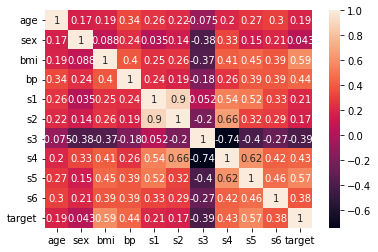
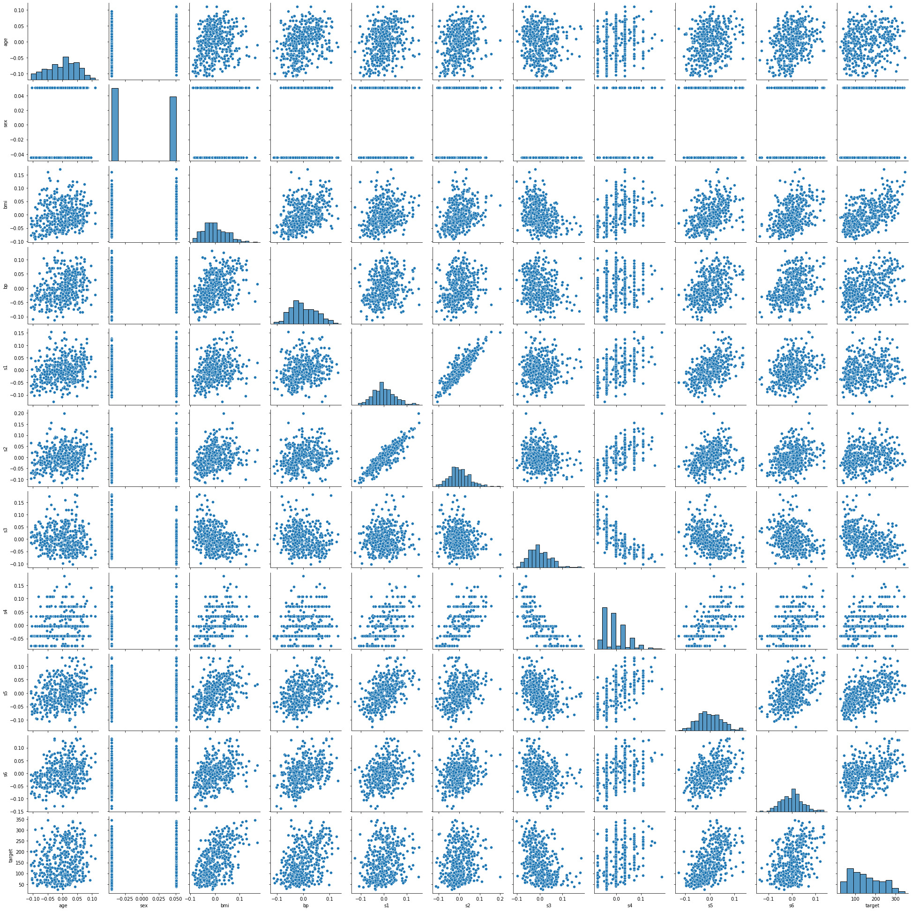
Por questões de aprendizado, a base de dados será dividida em duas:
-
original
-
original sem as colunas: 'age', 'sex', 's2' (motivo: correlação com target menor que 0,2 (em módulo))
# base de dados modificada
frame_mod = frame.copy()
excluir = ['age', 'sex', 's2']
frame_mod = frame_mod.drop(columns=excluir)
frame_mod.describe()
| bmi | bp | s1 | s3 | s4 | s5 | s6 | target | |
|---|---|---|---|---|---|---|---|---|
| count | 4.420000e+02 | 4.420000e+02 | 4.420000e+02 | 4.420000e+02 | 4.420000e+02 | 4.420000e+02 | 4.420000e+02 | 442.000000 |
| mean | -8.013951e-16 | 1.289818e-16 | -9.042540e-17 | -4.563971e-16 | 3.863174e-16 | -3.848103e-16 | -3.398488e-16 | 152.133484 |
| std | 4.761905e-02 | 4.761905e-02 | 4.761905e-02 | 4.761905e-02 | 4.761905e-02 | 4.761905e-02 | 4.761905e-02 | 77.093005 |
| min | -9.027530e-02 | -1.123996e-01 | -1.267807e-01 | -1.023071e-01 | -7.639450e-02 | -1.260974e-01 | -1.377672e-01 | 25.000000 |
| 25% | -3.422907e-02 | -3.665645e-02 | -3.424784e-02 | -3.511716e-02 | -3.949338e-02 | -3.324879e-02 | -3.317903e-02 | 87.000000 |
| 50% | -7.283766e-03 | -5.670611e-03 | -4.320866e-03 | -6.584468e-03 | -2.592262e-03 | -1.947634e-03 | -1.077698e-03 | 140.500000 |
| 75% | 3.124802e-02 | 3.564384e-02 | 2.835801e-02 | 2.931150e-02 | 3.430886e-02 | 3.243323e-02 | 2.791705e-02 | 211.500000 |
| max | 1.705552e-01 | 1.320442e-01 | 1.539137e-01 | 1.811791e-01 | 1.852344e-01 | 1.335990e-01 | 1.356118e-01 | 346.000000 |
PARTE 3: Pré-processamento
Dois procedimentos comuns de pré-processamento já são garantidos pela base de dados utilizada:
-
Normalizar os dados de acordo com a média e desvio padrão;
-
Transformar dados categóricos em valores numéricos (python: sklearn.preprocessing.OneHotEncoder).
Exemplo: como o algoritmo não entenderia o que é 'masculino' e 'feminino', a variável 'sex' já se encontra transformada para valores numéricos.
Só será verificado se existe alguma instância com valor NA. Caso positivo, esta será excluída. E também se existirem instâncias duplicadas.
# verificar valores NA
frame.dropna(inplace=True)
frame_mod.dropna(inplace=True)
# verificar valores duplicados
frame.drop_duplicates(inplace=True)
frame_mod.drop_duplicates(inplace=True)
# shape após verificação (inicialmente são 442 instâncias)
print(f'Shape base original: {frame.shape} \nShape base modificada: {frame_mod.shape}')
Shape base original: (442, 11)
Shape base modificada: (442, 8)
Finalizado o pré-processamento da base de dados, é necessário dividir o conjunto entre (data, target).
Apesar de isso já ter sido feito no início quando a base foi importada, o procedimento precisa ser refeito, pois no pré-processamento foi utilizada a base completa.
# a variável 'y' é o atributo 'target', o restante compõe a variável 'X'
X, y = frame.iloc[:, :-1], frame.iloc[:, -1]
X_mod, y_mod = frame_mod.iloc[:, :-1], frame_mod.iloc[:, -1]
PARTE 4: Dividir base de dados para treinamento e validação
X_train, X_test, y_train, y_test = train_test_split(X, y, test_size=0.3, random_state=42)
X_train_mod, X_test_mod, y_train_mod, y_test_mod = train_test_split(X_mod, y_mod, test_size=0.3, random_state=42)
print(f'Base Original\nShape treino: {X_train.shape} \nShape teste: {X_test.shape}')
print(f'Shape treino (target): {y_train.shape} \nShape teste (target): {y_test.shape}')
print(f'\nBase Modificada\nShape treino: {X_train_mod.shape} \nShape teste: {X_test_mod.shape}')
print(f'Shape treino (target): {y_train_mod.shape} \nShape teste (target): {y_test_mod.shape}')
Base Original
Shape treino: (309, 10)
Shape teste: (133, 10)
Shape treino (target): (309,)
Shape teste (target): (133,)
Base Modificada
Shape treino: (309, 7)
Shape teste: (133, 7)
Shape treino (target): (309,)
Shape teste (target): (133,)
PARTE 5: Métodos de Regressão
Criar os modelos para cada método e armazenar os resultados das respectivas predições, considerando as duas bases de dados (original e modificada).
## Regressão Linear - Base Original
lin = LinearRegression()
lin.fit(X_train.values, y_train)
y_pred_lin = lin.predict(X_test.values)
## Regressão Linear - Base Modificada
lin_mod = LinearRegression()
lin_mod.fit(X_train_mod.values, y_train_mod)
y_pred_lin_mod = lin_mod.predict(X_test_mod.values)
## Árvore de Decisão - Base Original
arv_dec = DecisionTreeRegressor(min_samples_split=20)
arv_dec.fit(X_train.values, y_train)
y_pred_arv = arv_dec.predict(X_test.values)
## Árvore de Decisão - Base Modificada
arv_dec_mod = DecisionTreeRegressor(min_samples_split=20)
arv_dec_mod.fit(X_train_mod.values, y_train_mod)
y_pred_arv_mod = arv_dec_mod.predict(X_test_mod.values)
## Random Forest - Base Original
rf = RandomForestRegressor(n_estimators=100, random_state=0)
rf.fit(X_train.values, y_train)
y_pred_rf = rf.predict(X_test.values)
## Random Forest - Base Modificada
rf_mod = RandomForestRegressor(n_estimators=100, random_state=0)
rf_mod.fit(X_train_mod.values, y_train_mod)
y_pred_rf_mod = rf_mod.predict(X_test_mod.values)
## SVR - Base Original
svm = SVR(kernel="poly", C=100, gamma="auto", degree=3, epsilon=0.1, coef0=1)
svm.fit(X_train.values, y_train)
y_pred_svm = svm.predict(X_test.values)
## SVR - Base Modificada
svm_mod = SVR(kernel="poly", C=100, gamma="auto", degree=3, epsilon=0.1, coef0=1)
svm_mod.fit(X_train_mod.values, y_train_mod)
y_pred_svm_mod = svm_mod.predict(X_test_mod.values)
PARTE 6: Avaliação das Métricas
def calcular_metricas(y_test, y_pred):
ev = np.round(metrics.explained_variance_score(y_test, y_pred),3)
mse = np.round(metrics.mean_squared_error(y_test,y_pred,squared=True),3)
r2 = np.round(metrics.r2_score(y_test, y_pred),3)
return ev, mse, r2
## Regressão Linear - Base Original
ev_lin, mse_lin, r2_lin = calcular_metricas(y_test, y_pred_lin)
## Regressão Linear - Base Modificada
ev_lin_mod, mse_lin_mod, r2_lin_mod = calcular_metricas(y_test_mod, y_pred_lin_mod)
## Árvore de Decisão - Base Original
ev_arv, mse_arv, r2_arv = calcular_metricas(y_test, y_pred_arv)
## Árvore de Decisão - Base Modificada
ev_arv_mod, mse_arv_mod, r2_arv_mod = calcular_metricas(y_test_mod, y_pred_arv_mod)
## Random Forest - Base Original
ev_rf, mse_rf, r2_rf = calcular_metricas(y_test, y_pred_rf)
## Random Forest - Base Modificada
ev_rf_mod, mse_rf_mod, r2_rf_mod = calcular_metricas(y_test_mod, y_pred_rf_mod)
## SVR - Base Original
ev_svm, mse_svm, r2_svm = calcular_metricas(y_test, y_pred_svm)
## SVR - Base Modificada
ev_svm_mod, mse_svm_mod, r2_svm_mod = calcular_metricas(y_test_mod, y_pred_svm_mod)
Variância Explicada
## Base Original
y = [ev_lin, ev_arv, ev_rf, ev_svm]
legenda = ["Reg. Linear", "Árvore de Dec.", "RF", "SVR"]
x = np.arange(len(y))
plt.figure(0)
plt.bar(x, y)
plt.xticks(x, legenda)
plt.ylim([0, 1])
plt.title('Variância Explicada - Base Original')
plt.ylabel('Valores')
## Base Modificada
y1 = [ev_lin_mod, ev_arv_mod, ev_rf_mod, ev_svm_mod]
legenda1 = ["Reg. Linear", "Árvore de Dec.", "RF", "SVR"]
x1 = np.arange(len(y1))
plt.figure(1)
plt.bar(x1, y1)
plt.xticks(x1, legenda1)
plt.ylim([0, 1])
plt.title('Variância Explicada - Base Modificada')
plt.ylabel('Valores')
plt.show()
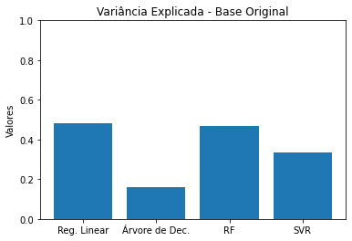
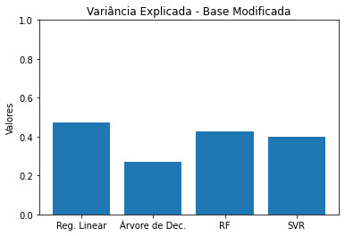
MSE
## Base Original
y = [mse_lin, mse_arv, mse_rf, mse_svm]
legenda = ["Reg. Linear", "Árvore de Dec.", "RF", "SVR"]
x = np.arange(len(y))
plt.figure(0)
plt.bar(x, y)
plt.xticks(x, legenda)
plt.ylim([0, 5000])
plt.title('MSE - Base Original')
plt.ylabel('Valores')
## Base Modificada
y1 = [mse_lin_mod, mse_arv_mod, mse_rf_mod, mse_svm_mod]
legenda1 = ["Reg. Linear", "Árvore de Dec.", "RF", "SVR"]
x1 = np.arange(len(y1))
plt.figure(1)
plt.bar(x1, y1)
plt.xticks(x1, legenda1)
plt.ylim([0, 5000])
plt.title('MSE - Base Modificada')
plt.ylabel('Valores')
plt.show()
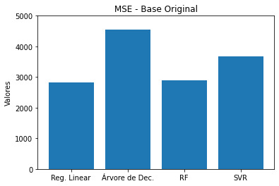
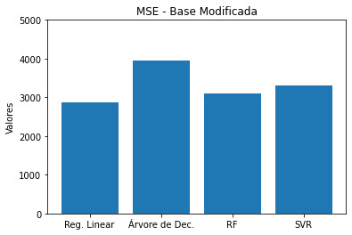
R2
## Base Original
y = [r2_lin, r2_arv, r2_rf, r2_svm]
legenda = ["Reg. Linear", "Árvore de Dec.", "RF", "SVR"]
x = np.arange(len(y))
plt.figure(0)
plt.bar(x, y)
plt.xticks(x, legenda)
plt.ylim([0, 1])
plt.title('R2 - Base Original')
plt.ylabel('Valores')
## Base Modificada
y1 = [r2_lin_mod, r2_arv_mod, r2_rf_mod, r2_svm_mod]
legenda1 = ["Reg. Linear", "Árvore de Dec.", "RF", "SVR"]
x1 = np.arange(len(y1))
plt.figure(1)
plt.bar(x1, y1)
plt.xticks(x1, legenda1)
plt.ylim([0, 1])
plt.title('R2 - Base Modificada')
plt.ylabel('Valores')
plt.show()
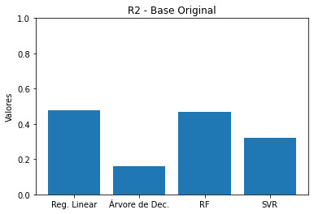
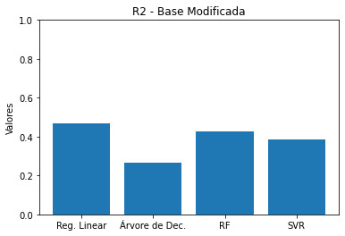
Análise
Percebe-se que modificar a base de dados excluindo três atributos com base em um limiar de correlação com o target não alterou consideravelmente a performance dos algoritmos. Dessa forma, adiante serão avaliados apenas os resultados dos métodos que utilizam a base de dados original.
Os melhores resultados (i.e. Variância Explicada e R2 mais próximos de 1 e menor MSE) são obtidos ao utilizar Regressão Linear e Random Forest, com o primeiro sendo superior.
PARTE 7: Influência dos atributos nos resultados
É de suma importância entender os fatores que influenciaram em um determinado resultado de um método de aprendizado de máquina. Neste projeto, utilizarei o conceito de SHAP Values (SHapley Additive exPlanations) que, resumidamente, analisa a contribuição marginal de cada atributo em cada saída.
## Regressão Linear - Base Original
lin_explainer = shap.Explainer(lin.predict, X_train.values)
lin_shap_values = lin_explainer(X_test)
shap.plots.beeswarm(lin_shap_values)
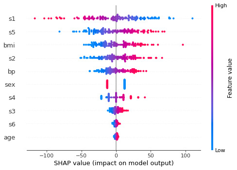
## Árvore de Decisão - Base Original
ex = shap.TreeExplainer(arv_dec)
shap_values = ex.shap_values(X_test)
shap.summary_plot(shap_values, X_test)
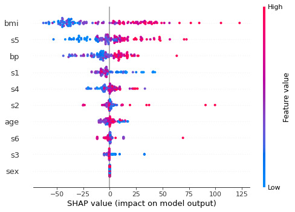
## Random Forest - Base Original
ex = shap.TreeExplainer(rf)
shap_values = ex.shap_values(X_test)
shap.summary_plot(shap_values, X_test)
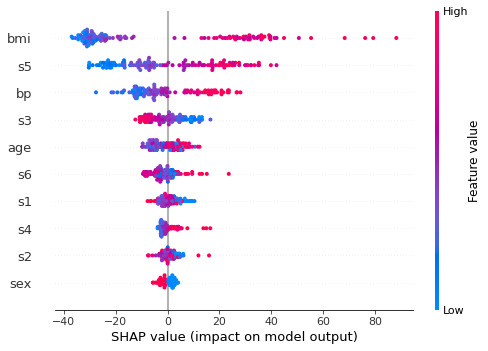
## SVR - Base Original
X_train_summary = shap.kmeans(X_train.values, 10)
svm_explainer = shap.KernelExplainer(svm.predict, X_train_summary)
svm_shap_values = svm_explainer.shap_values(X_test)
shap.summary_plot(svm_shap_values, X_test)
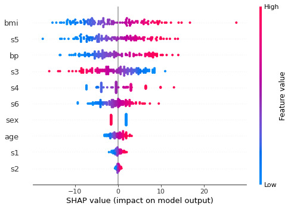
PARTE 8: Discussão
Os parâmetros 'bmi' (índice de massa corporal) e 's5' (concentração sérica de triglicerídeos) estão entre os 3 de maior influência nos resultados em todos os algoritmos. De maneira proporcional, quanto maiores 'bmi' e 's5', maiores as chances de progressão da doença.
A regressão linear foi o único método que considerou o parâmetro 's1' (nível sérico de colesterol total) como o de maior contribuição marginal (quanto maior 's1', menores as chances de progressão da doença). Também é o único que não tem 'bp' (pressão arterial média) entre os 3 parâmetros de maior relevância.
Importante salientar que os resultados observados utilizando os valores SHAP não necessariamente implicam em causalidade entre os parâmetros e a progressão da doença, essa é uma maneira de observar aquilo que o algoritmo considera como relevante para chegar em um determinado valor de target. Quaisquer afirmações sobre esses relacionamentos devem ser cuidadosas e contar com a colaboração de profissionais da área da saúde.